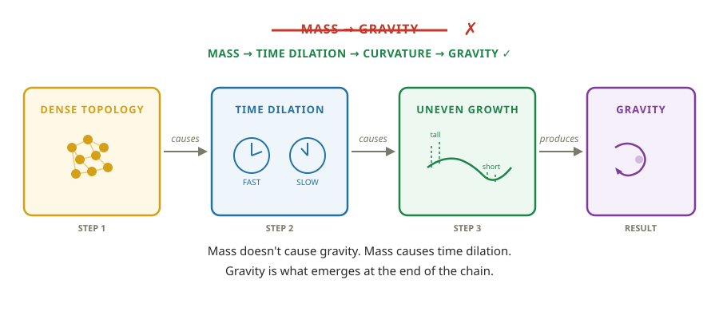
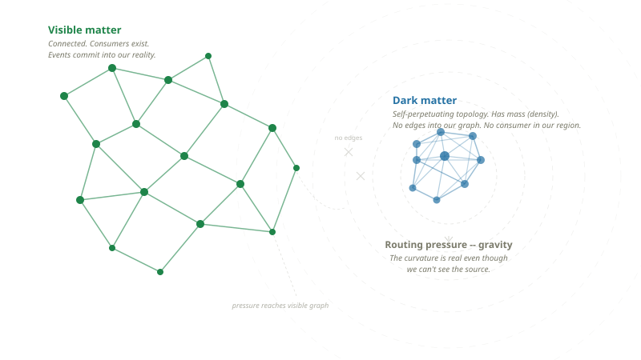

When someone asks if I have any hobbies, this is it. It might seem odd to “ponder the universe” as a hobby.
But I’d argue it’s actually a well-known fact that the best way to spend ANY amount of time on ANY amount of drugs is to sit back and go “YO BUT what IF LIKE…”
Now, I have zero business being in this space. I have no mathematical ability whatsoever and my background is in Software. But if the music industry can tolerate Rick Rubin, then maybe I can write a post on the confidence in my “taste” for how the universe ought to work.
This “hobby” started because around 9 years ago I was curious if anything is truly “random”. I was surprised to learn there is no true random in computers, so Math.random() is more accurately labeled as Math.unguessable().
Now, I KNOW the odds that someone gets committed rise significantly the moment they start saying “I have a theory of the universe.”
So to get ahead of whoever it was that plotted to get Kanye; Here’s what this actually is.
This is my best guess on how it should all work. The odds any of this is right are about as close to zero as something can be. But if even one concept inspires a thought in someone more capable, even if born out of pure opposition, then I’d consider that a win. My goal is to at least be internally consistent with the logic, and follow that wherever it takes me, even if directionally wrong.
Cheers,
A Very Serious Person (Greg)
The foundation here draws heavily from causal set theory, Wolfram’s project, and loop quantum gravity. If this piques your interest, start with those. They have the math we don’t.
Chapter 1: A Duck In a Tub
Alright let’s go. So all you need to know is physics has two main theories. General relativity describes the big stuff, Quantum Mechanics the small stuff. They are both really great at what they do. It’s very similar to East and West coast rap in the 90s. Both are great in their own respects but you rarely see them in the same room together.
So in order to make any grand “theory of everything”, you need to unify them.
So here is our take.
Imagine a rubber duck floating in a bathtub. Water pours in and the duck rises. Your whole experience, what you consider “now”, “reality” — that is all on the surface. The stream of water flowing into the tub — that is events happening in the world. You floating on the surface noticing the water level change — that is time passing.
Underneath you, there is a vast ocean of all the events that lead you to “here” and “now”. The idea of “here” and “now” should ring some bells because it’s a less formal way of saying “space” and “time” — or “spacetime”.

You can think of spacetime and GR as the surface, where your “now” lives. Quantum Mechanics is focused on the change. Quantum Mechanics shows up on the small scale because change happens on the small scale — the bath fills up one H2O molecule at a time.
They are both describing water in a tub. But different aspects/layers of it. Quantum Mechanics shows up when we start looking at how do we go from “here and now” to the NEXT “here and now”?
It is slightly more nuanced than this, but this analogy gets us 80% of the way there.
So what is “underneath” the water? Well, in our theory it’s a graph.
Chapter 2: The Graph
So it’s not water, but a graph you are floating on. A graph of what? It’s a graph of events. All the events that have ever happened in the universe, going all the way back to the big bang. These events add together to bring you to your “here” and “now”.
Intuitively you understand this — trace the events of the past and they will always bring you back to your here and now.
Seems basic enough right? So why is physics so fucking weird with it then?
- Why can’t anything travel faster than light?
- Why can’t you shield gravity? Got radiation? Lead stops it. Electromagnetic field bothering you? Get your ass in a Faraday cage. Gravity? Nothing.
- Why does looking at something change it? Not touching it. Not bumping it. Just looking.
- Why do two particles on opposite sides of the universe give correlated answers instantly?
- Why does time slow down near a black hole?
- At what age can a man know for sure that he won’t go bald?
So let’s try and explain this. A graph is just dots connected by lines. You already know graphs.

Chapter 2: Spacetime
Have you ever thought about what spacetime is? Open up any physics textbook and you will see a picture of a bowling ball on a trampoline, and it’s the analogy given for mass warping spacetime.
This is a quote from John Archibald Wheeler, the physicist who named black holes and gave us the most famous summary of Einstein’s theory:
“Matter tells spacetime how to curve, and spacetime tells matter how to move.”
Beautiful sentence John. Now what THE FUCK does that even mean? It tells you what spacetime does. It doesn’t tell you what spacetime is.
Einstein gave us spacetime and general relativity around 110 years ago and we have a pretty incredible understanding of it and its properties. Mass warps spacetime and this curvature gives us gravity, as well as time dilation, so the closer you are to a black hole the slower time moves for you.
Now here is where I would like to play my Rick Rubin card and apply my “taste”. The image of a trampoline and a bowling ball is wrong. The end result is correct, but the mechanism for how mass warps spacetime is wrong (according to me).
Instead, imagine a meadow with a rock in it. Pretend the grass can still grow with the rock on it, its just grows slower than the regions with no rocks. We end up with a similar shape/result to the bowling ball on a trampoline.
Except, we suggested something subtle that makes a BIG difference. The mass does not warp the trampoline — the grass grows around the rock, that area of grass just changes more slowly.

Let’s look at the implications of this more closely. But to do that properly we need to revisit our “event graph.”
Event Graph
What is the event graph and most importantly how does it change?
You probably don’t think about it often, but our reality has rules to how it’s allowed to change. We study them, write down the equations and call it physics.
So the idea that a graph has rules should not be controversial. So what does our graph look like and what are the rules? Well they are simple:
The nodes are events. Events, not objects, or particles. What is an Event exactly? Who knows for sure, but it would have to be the bookkeeping currency of the universe. I would suggest it’s closely tied to what we consider energy, and why it can’t be created or destroyed. You are always just logging the interaction of energy.
The edges are operations — So nodes are where the energy is, but edges carry the math that generates the next event. Summing all operations to any node gives us the next layer of reality.
The nodes’ position gives rise to properties — just like in a family tree, where we don’t store “parent” on a dot, we look at who’s underneath it.
The lines point forward, the graph grows — cause and effect, past to future. Time moves on.
This is a poor man’s interpretation of causal set theory, but there is a real branch in physics which says the universe can be modeled as discrete events. We are closely aligned if not perfectly aligned with that, and take the position.
One point to drive home, an event is not “Sara went for a run”, there is no concept of “Sara” in the graph. Events are energy, and the interactions between them. There is no “Sara”, there are no objects, there might not even be photons, particles. It’s all energy. So if there is no Sara? What are you? And most importantly what is mass?

Mass
If it is all a graph what is mass?
Remember we said our graph is events. That means whenever you try and think of an object like “a star” or “a photon”, none of that exists in our graph as a single point.
Mass, objects, particles — all the result of stable configurations within the graph. A collection of events that join together and form a specific “shape” or result if you will.
When we go to build the next layer of reality, to move from current now to future now, we sum all of those events. And for mass — when you sum all the operations together — it just generates the same shape again. That’s it. Mass is a self-perpetuating topology within the event graph.
To be honest this is a bit of a head fuck, but stay with me. You think of mass as something that just is. But really it’s something that existed, and then the bookkeeping decided it should exist again.
Imagine, your boss pays you $1000 (event 1), your landlord charges you $1000 (event 2). Those sum together so you were poor then, and you are poor now. Two events resulting in a stable configuration where you forever remain poor. If those events happen again in the next now, you have a self-perpetuating topology of poverty.
Again, this feels trippy but we know energy and mass are equivalent from Einstein’s E=MC². Why does C show up, what does the speed of light have to do with mass? Well C the speed of light is not a measure of light at all, it is how fast change can occur. C is the fastest operations can occur in the graph. C is how fast our grass in the meadow can possibly grow.

Gravity
Three clues that something is off about gravity:
- You can shield every other force. Radiation — slap some lead on that bitch. Electromagnetic fields — get your ass in a Faraday cage. Gravity — nothing. Not once, anywhere, ever.
- Einstein showed gravity and acceleration are identical. Standing on Earth feels exactly the same as accelerating in a rocket at 9.8 m/s². Why would a force feel the same as motion?
- Physicists have hunted the graviton — the particle that carries the gravitational force — for nearly a hundred years. Never found one.
In our bowling ball on a trampoline example, mass warps spacetime. But we are saying that mass is really the collection of events, and there is a fixed rate (C) information in the graph can travel and compute.
So it stands to reason, the more complex the object, the more events/operations you need to sum, and if we have a fixed rate information can travel or you can sum these events together...what does that mean for us?
Some people see where I am going with this. But before I answer. Think about what is “time” to you? Time is a bit odd in physics because the equations we have actually work both forwards and backwards for time equally well. Some people argue there is no time.
To answer this, think about what it would look like to you if time stopped? Well nothing would change. Your perception of time is the rate of change in your local area on the graph.
So you are not a duck in a tub. Water is level, our surface of the graph, our “nows”, are uneven. The grass in our meadow is all growing at different rates — that depends on how many rocks are in which area and the size of those rocks.
Mass does NOT warp spacetime. Mass/complex operations take longer to compute and slow the growth of the graph in that area.
This gives rise to uneven curvature on the surface of the graph which IS gravity. Gravity is an emergent force that arises from the delta between rates of change between two regions of space or “nows”.
Step 1: Density causes time dilation. Dense regions have more edges to process per tick. It takes longer to compute the next “now.” Time literally runs slower. This isn’t theoretical — GPS satellites orbit where Earth’s graph is less dense. Their clocks run faster than yours by 45 microseconds per day. Your phone corrects for this every single day or your location would drift 10 km. Time dilation is the first thing that happens. It comes directly from density.
Step 2: Time dilation causes curvature. If time runs slower in one region and faster in another, the spacetime surface grows unevenly. The sparse regions race ahead. The dense regions lag behind. That uneven growth IS the curvature of spacetime. Not a metaphor — that is literally what curvature means. The surface is lopsided because the graph underneath it didn’t grow at the same rate everywhere.
Step 3: Gravity emerges from the curvature. Objects on a curved surface follow the natural geometry — the cheapest path. That path curves toward the slow-growing region. That curve is what we call gravity.
This order is everything. Mass does not pull things toward it. Mass does not cause gravity directly. Mass is dense topology. Dense topology causes time dilation. Time dilation causes uneven growth. Uneven growth IS curvature. And gravity emerges from that curvature. It’s a chain reaction — and gravity is the LAST thing in the chain, not the first.

So why can’t you shield gravity? Gravity emerged from the tax you paid to get to the next “now” — want to have your next moment you have to pay the compute and gravity is a measure of your debt. It’s unavoidable.
Once you have curvature, objects follow the cheapest path through it — the path that requires the least computation to traverse. That path curves toward the dense region. That curve is gravity.
Why should you care? So the end result is the same, either the trampoline grew around the bowling ball or the bowling ball warped the trampoline.
Well, what would happen if you removed the bowling ball? What if you removed the sun?
Chapter 4: Gravitational Runes
If you could snatch the sun and make it disappear. What would happen in both models? If mass warps spacetime, then it would snap back. In the event graph model, the rate of growth for that region would be restored to C. If you look at Earth which has mass and is growing slower than C, then the area that used to have the sun would eventually catch up and warp in the other direction.
But what if we compare it to a place in space that NEVER had any mass? A patch of grass that was always in the sun? Well even though both places are changing at the rate of C, the place where the sun was will never catch up.
Like finding a long lost ancient city in the forest, growth was restored and the forest takes over, but there is still some small impression you can see on satellite images. We are saying there should be evidence of gravitational runes, relics of old mass in the universe.

Now, this is where I have to throw my hands up and say that I have no idea how you would detect this. I am not aware of any way you can snatch a planet, so any change to a planet should emit those changes outwards to the graph slowing the rates of change nearby accordingly.
So our analogy is more like water balloons than rocks — if you pop the balloon you need to account for the water that spills out and impacts the rates of growth on the other areas of the graph. But if there is some way where another region of space would act as a shield and you could find a pristine patch of grass in the universe and compare it to another region that USED to have mass, you would see a gravitational rune if I am right.
No idea if I am right, but I am trying to be internally consistent and this leads to a different prediction than GR. So this is my stake in the ground.
Does anyone know if there is any evidence of this?
Chapter 3: Change starts small.
So now with some small tweaks to GR, let’s do the whole Quantum world and unite the two great houses.
So our graph grows at uneven rates, gravity emerges. But how does an event graph change? Well one tiny event at a time, and this is where Quantum shows up, when we focus on the small changes as we go from “here” to “now”.
If it’s all just energy and operations underneath how do we ever GO from “now” to the “next now”? This is actually a deeper philosophical question than it seems. But in our model, we record one event at a time, but we only sum those events when you “ask” for them.
The next now is always accumulating, building, but you only ever get the next layer/now of reality when you ask for it. I keep saying “layer” of reality and what I mean by that is the next events that were the result of all the operations below it. So the way our graph changes is by summing all the operations below it to generate the next layer. Like a brick builder building on the stack below it.

Let’s walk through the steps together on how this “ought” to look like and try and explain some of the strangest experiments we have.
Chapter 4: The Event Cone
Remember that our graph is events, not things, not objects, not particles. Events. That means we need to record every event as it happens. And we said that reality is the sum of all the events that came before it.
But here’s the problem. Not all events arrive at the same time. How do you sum events that don’t arrive together? When do you commit them? There needs to be a commit point. Well we are saying that point exists and the answer is when you “measure”, or when you ask those events to build the next layer of reality. It commits at that point and takes us to the next now. Until you “measure”, the events are actually accumulating — another event could arrive that would change the output.
Imagine this, your brother is expecting a baby today. You’re driving to a family function. You know — with absolute certainty — that someone at this function is going to ask: “are you an uncle yet?”
Right now, driving in, what’s the answer?
It’s not yes. It’s not no, the baby could have been born. So...maybe? Your brother hasn’t called yet. The order the events or information flows to you matters — does your aunt ask before your brother calls? Once your aunt asks, you are committed, done.
The event graph works the same way. Now to you, it’s important to note that what was going to happen was deterministic. If we were watching a movie of your life we would see the dramatic cut of your brother walking to the phone to call you right as you were pulling into your aunt’s driveway. But we know how fast the information can travel, we could see the events unfolding, we knew which one would reach you in time and which order.
We are going to give this collection of events that will reach you a name — let’s call it the event cone. If the light cone is all the events that will ever reach you, the event cone is the number of events that WILL reach you before you are measured/asked to commit. Any event that will impact the next layer of reality.
So if your brother’s phone call will come before your aunt asks then it’s inside the event cone.

The event cone is narrower than the light cone. It’s not what could reach you — it’s what reaches you before you’re forced to answer. When you’re asked determines what counts.
Chapter 5: There is no random.
So there is this very famous experiment that started this whole gang war. It’s called the double slit experiment. I highly suggest you check out the PBS SpaceTime content on it for the full breakdown. We will try and do the best we can to explain it by analogy below.
So our event graph is our reality. It’s constantly growing which means there will be some areas of the graph that have uncommitted events, and other areas that have changed. Which means these uncommitted events should show up in our reality, if our reality is the graph.
And they do, they do, they show up as a wave, and physicists call it a probability wave. When this “wave” is measured it collapses and gives an actual result.
The long standing debate is if this wave is random. Einstein said “God does not play dice.”, but there was some experiment done to prove there are no local hidden variables.
What does our model say? We say it is not random, but an uncommitted event genuinely does not know what the result will be. There are no local hidden variables. When you were driving to your aunt’s house you did not have the answer in your pocket. But the events that determine the answer were already set in motion. The information was on its way to you at the speed of C, and if your aunt who is also a collection of events summing at C, then we can see which information is on its way to you in the graph, what will reach you in time, and the point you join. The way it unfolds is the way it always would have unfolded. There is no random.
Bold claim there Rick Rubin, any proof?
Chapter 6: Double Slit Experiment — Graph Event Perspective.
You either know this experiment or it will take you 3 days and a cigarette to process the head fuck.
But let’s do it by analogy really quick to try and explain it for everyone who needs a refresher.
We fire a bunch of photons one at a time between two slits at a screen. Each photon lands on the screen. Cool. But a pattern on the screen starts to emerge. Where the photons land produces something called an interference pattern — it happens when you have two travelling waves meet. But there is nothing in the room, there is only the photon. They are forced to conclude that before the photon reaches the screen, it is travelling not as a photon but a wave, and its wave goes through both slits and interferes with itself. When they try and see this wave, the photon stops behaving as a wave and the interference pattern is gone. It’s only there if you are not measuring it.
This would be like shooting a basketball and finding out it turns into a wave and goes through both nets. But only when you close your eyes.
How do we explain this from an Event Graph? Everything between the photon source and the screen is events. Those events collect and we only produce the output once we are asked for the next layer of reality. The act of “measuring” is someone asking — it’s when pending events have a consumer that requires them in its dependency tree. Physicists say observer, but it’s really a consumer. No consumer at the slits? Both causal paths stay in-flight, they overlap, and the screen — a causally dense region — forces commitment. That overlap is the interference pattern. Put a detector at the slits? Now there’s a consumer — the event commits at the slit and only one path survives. No overlap, no pattern.

Delayed Choice
It gets stranger. In Wheeler’s delayed-choice experiment, they let the photon enter the apparatus and only AFTER it’s already inside do they choose the configuration — whether to set up the equipment to measure which path or to let both paths interfere. The choice happens after the photon should have “already picked a door.” Doesn’t matter. The result always matches whatever apparatus is waiting at the end.
This would be like shooting the basketball and only AFTER it leaves your hands, someone decides whether there’s one net or two. Somehow the ball was always the right shape for whatever they chose.
This kills the idea that the detector “bumps” the photon and disturbs it. Nothing touched it. The apparatus choice was made after the photon was already in flight. So what’s going on?
In our model: nothing weird. The photon was never committed. It’s pending. In-flight. The timing of your “choice” is irrelevant because the event hadn’t committed yet — it was always waiting for a consumer. What matters is what kind of consumer it eventually meets, not when you decided to put it there.

Quantum Eraser
Now the one that breaks people.
Using a special crystal, each photon that enters is split into a pair of entangled twins — one called the “signal” and one called the “idler.” The signal photon heads to the screen. The idler gets routed through a separate set of optics.
Here’s the twist. The idler’s route through those optics goes one of two ways. Half the time, it hits a beam splitter that mixes the two possible paths together — after that, it is genuinely impossible to figure out which slit the idler (and therefore the signal) came from. The which-path information isn’t recorded and deleted. It’s made unrecoverable. The paths are scrambled together. That’s the “eraser.” The other half of the time, the idler takes a route that preserves which-slit information — you can read which way it went.
And here’s what actually happens. You look at all the dots on the screen. No pattern. Just a blob. Nothing. The screen by itself never shows an interference pattern — this is the part most people get wrong about this experiment.
But then you take the screen data and you sort it. You filter by “show me only the dots whose twin went through the eraser.” The interference pattern appears. Filter by “show me only the dots whose twin preserved which-path info.” No pattern — just a blob within the blob.
I can’t even explain this one in basketball terms.
The dots on the screen never moved. They were committed the moment they hit. What changed is which subset you looked at — and the twin’s measurement is the sorting key.
So why does this matter for “no random”? Because the dots on the screen LOOK random. But they’re not. There is structure hiding in them — an interference pattern — that you can only see when you have the sorting key from the twin. If those outcomes were truly random, with no underlying structure, no sorting key in the universe could reveal a pattern. You can’t sort pure noise into stripes.
But these photons aren’t independent. They share a common origin — a common causal ancestor in the graph, the crystal event that created both twins. That shared ancestry is why their outcomes are correlated. The pattern was always there, baked into the graph from the moment the twins were born. The twin’s measurement just tells you which subset to look at. Nothing was erased. Nothing went backwards. The graph knew from the start.

The quantum eraser doesn’t change the past. The dots on the screen are committed and never move. But each photon has a twin, and they share a common origin in the graph — a common causal ancestor. Their outcomes were always correlated. How the twin commits determines which subset of dots reveals a pattern. The pattern was always there, hidden in the correlations. The twin’s measurement is the sorting key. Nothing was erased. Nothing went backwards. The graph knew from the start.
This is, to me, the single strongest piece of evidence that something like this model is going on. Because the quantum eraser makes perfect, obvious, boring sense if reality is a graph where entangled nodes share causal ancestry. And it makes absolutely no sense otherwise.
Quantum mechanics is not spooky. It is not random. It is a node that hasn’t been asked yet — events still on their way through the graph. The moment something needs its value, it commits, and it was always going to give exactly that answer. You just couldn’t see it coming because you’re inside the graph.
Outro
This is a conceptual framework, and there is no math backing this. This is just how I might try and build a system like the universe if my boss ever happened to ask. Maybe a 2 week sprint?
There are lots of other phenomena we could analyze from this perspective, and it would be a dream come true if anyone actually took this seriously enough to take the time and consider it.
Here are some wild guesses though:
Dark matter as a topology without a consumer. What if dark matter is a self-perpetuating topology that never adjoins with the visible graph? It has internal structure — mass — so it exerts routing pressure — gravitational effect. But it never commits into the layer we can detect. Not invisible matter. Matter that exists in the graph but has no consumer in our region. This would explain why dark matter has gravitational effects but no electromagnetic interaction, no direct detection, no visible output.

Entanglement. Two particles share a common causal ancestor. They separate. Both pending. When one commits, it traces back through shared history. The other does the same — same root, complementary values. Sealed envelopes from the same deck. No signal. No faster-than-light communication.

Tunneling. Shortcuts exist. Two nodes that look “far apart” on the surface might be direct neighbours in the actual graph, connected by an edge that doesn’t follow the emergent geometry. The particle doesn’t go through the wall — it takes a path the wall doesn’t cover.
Technical Summary
GL Theory — Technical Position
Core claim: Spacetime is a directed graph of discrete events connected by causal edges carrying algebraic operations. Stable topologies are mass. The graph grows — growth IS time. Node values are lazily evaluated — computed only when demanded by a downstream consumer. Causal influence propagates at C: 1 edge per tick maximum.
Six axioms:
- Nodes are spacetime events — where and when, inseparable.
- Edges are directed causal relations carrying operations.
- The graph grows: new nodes born as edge-operation products of existing nodes. Growth IS time.
- Node properties derive entirely from position — from paths reaching the node and their accumulated operations. Nodes store nothing.
- Changes propagate at C: 1 edge per tick maximum.
- Nodes are pending until demanded by a consumer. Pending nodes accumulate inputs as events arrive. Commitment freezes inputs and computes the value. Committed nodes are immutable.